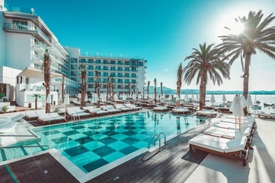

Luyolo
Mntuyedwa

Which City?
Ibiza
I would watch movies or even see videos of Ibiza, and there is no denying that its beauty has a magic pull to all that
visit and settle down. When people explain why they visit the island in the first place, their response is
normally along the lines of wanting to escape the monotony back home and do something out of the ordinary.
Every year partiers and beach lovers flock to the island to dance all day and night listening to the best
DJs in the world as well as having a great time at some of the most beautiful beaches in Europe.
I love the ocean so much, so the beaches on the island of Ibiza are simply stunning.The parties in Ibiza
are well known. The clubs entice people to enter their clubs and escape for a few hours with amazing music,
sets and scenery. There are so many nights to choose from and so many clubs too. A range of boredom-busting
options are available from waterparks and boat trips, to mini-clubs and jeep safaris.
A Foreign Language
| English Phrase | Spanish Phrase |
|---|---|
| The calm before the storm. | La calma antes de la tormenta. |
| A lion does not concern himself with the opinion of a sheep. | Un león no se preocupa por la opinión de una oveja. |
| To get something over with because it is inevitable. | Para terminar con algo porque es inevitable. |
| Between a Rock and a Hard Place. | Entre una roca y un lugar duro. |
Historical Places In Cape Town
District 6 Museum
- It was named District Six when it became the Sixth Municipal District of Cape Town in 1867.
- The floor of the museum is covered with a big map of the district with hand written notes of former inhabitants.
- The museum offers programmes to help develop the district.
City Hall
- The City Hall has become a central venue for creative and cultural events such as art exhibitions and concerts.
- The building was designed as the result of a public competition.
- The faces of the clock are made from 4 skeleton iron dials filled with opal.

Castle of Good Hope
- In 1936 the Castle was declared a historical monument.
- In the 1980s it is considered the best preserved example of a Dutch East India Company fort.
- The Castle is the oldest existing building in South Africa.